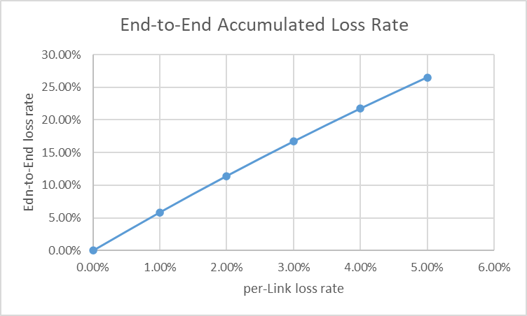
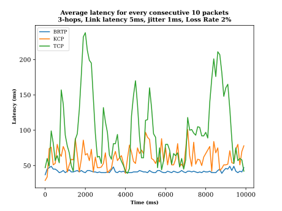

The BATS Protocol is a network communication protocol based on BATS
codes, designed to provide high throughput and low latency data
transmission in lossy networks. In this project, we evaluate and compare the performance of BATS Protocol with
other techniques/protocols in terms of various performance metrics such as throughput, latency and reliability.
The BATS Protocol performance evaluation focuses on the capability of the communication logic, such as coding
(including feedback), congestion control, routing, etc. Therefore, in the testbed, we try to reduce the
effect of the
implementation by limiting the network link bandwidth. The performance compared with other techniques is
relative, and the gain should be scalable with the network bandwidth.
This is NOT a software performance test. In other words, we do not test how fast the BATS Protocol software
can run a
device. Tough the testbed considers various practical scenarios, we do not test performance for specific
applications,
like video streaming.
2. Network Topologies
Three kinds of network topologies will be mainly used in the tests:
one-hop network
multi-hop networks
multi-path networks (in progress)
3. Network Tools
In this section, we will introduce the network tools used in the test framework.
Iperf3 is an open-source tool used for measuring network performance. It
provides a straightforward way to assess
the bandwidth, latency, and other parameters of a network link. iPerf operates in client-server mode,
where one system
acts as the server and another as the client. The client sends a controlled amount of data to the
server, and the tool
calculates metrics like throughput, packet loss, and jitter. iPerf is commonly used to measure TCP and
UDP performance
on networks.
Bperf is a specialized network performance testing tool developed by n-hop
technologies Limited. It
is designed to
measure and assess the performance of the BATS protocol.
Linux Traffic Control is a powerful framework built into the Linux kernel that
offers advanced
traffic management
and Quality of Service (QoS) capabilities. It allows administrators to shape and control network traffic
by configuring
various parameters like bandwidth, latency, packet scheduling, and prioritization. With tc, you can
implement policies
that prioritize certain types of traffic, limit bandwidth for specific applications, and manage
congestion to ensure
fair allocation of network resources.
Customized application is used to measure the end-to-end latency by sending
messages of any fixed
length at a
given rate, and the source code is in the file `src/pvp_game_endpoint.cc`. For HOWTO, please refer to
pvp_game_endpoint.
4. Networking Parameters
Link bandwidth: The bandwidth of the link is the maximum rate at which data can
be transmitted over the link. The
bandwidth of a link
is a critical parameter that determines the maximum data rate that can be achieved between two nodes.
The bandwidth of a
link is determined by the physical characteristics of the link, such as the cable type, signal strength,
and interference.
Link latency: The latency of a link is the time it takes for a packet to
travel from the source node to the
destination node. It
represents the propagation delay of the signal over the link.
Link loss rate: The loss rate of a link is the possibility that a packet
transmitted over the link will be lost.
Packet loss can occur
due to various reasons, such as network congestion, buffer overflow, or link errors. In terms of the
behavior of the
loss, we can classify the loss into two types: independent loss and burst loss. In the section [packet
loss
pattern](#5packet-loss-pattern), we will introduce the loss pattern in detail.
Link jitter: In the context of computer networks, packet jitter or packet delay
variation
(PDV) is the variation in
latency as
measured in the variability over time of the end-to-end delay across a network. A network with constant
delay has no
packet jitter. Link jitter is the latency variation of the link.
5. Packet Loss Pattern
In assessing the efficacy of network protocols like TCP, UDP, and BATS, it's crucial to scrutinize their
performances under varying degrees of packet loss. We will explore 3 principal packet loss models for the
evaluation.
Random Loss Model: The random loss model involves dropping packets independently
based on a given
percentage p.
Each packet loss event is unrelated to others, making it a simple yet unpredictable scenario. This model
reflects
scenarios where packet loss occurs randomly and does not follow any specific pattern.
State Loss Model: The state loss model utilizes a 4-state Markov chain to
depict packet loss behaviors.
The Markov chain states are as follows:
State 1: good Packet Reception (no loss)
State 2: good Reception within a Burst (no loss)
State 3: burst Losses (loss probability is 100%)
State 4: independent Losses (loss probability is 100%)
Utilizing transition probabilities such as p13, p31, p23,
p32,
and p14 , the Markov chain's transition matrix is described as:
Furthermore, we derive the probabilities of each state πi,i=1...4 in terms of the
aforementioned
transition probabilities. Notably, State 4 is associated to isolated packet losses, after that the
system
must come back to State 1, so p41 is assumed to be 1. Solving the system yields:
This model effectively captures scenarios involving structured packet losses, like bursts or isolated
instances.
Gilbert-Elliot (GeModel) Loss Model: The Gilbert-Elliot model, synonymous with
the burst loss model, is characterized by distinctive states and transition probabilities:
Probability of transitioning to a bad (lossy) state.
Probability of transitioning from a bad state to a good state.
Loss probability in the bad state.
Loss probability in the good state.
The Gilbert-Elliott loss model is a Markov chain with two states (G and B, G is in the good state,
and B is
in the bad
state. πG is the probability of being in the good state, and πB is the
probability of
being in the
bad state.). The transition matrix of the Markov chain is as follows:
$$
A = \begin{bmatrix}
1-p & p \\
r & 1-r \\
\end{bmatrix}
$$
Markov chains can achieve a stationary distribution independent of the initial state. Solving the
system, we
get the
states probabilities:
The Gilbert-Elliott model is particularly useful for simulating bursty packet loss behaviors, where
packets
are more
likely to be lost during periods of degraded network conditions (bad state) compared to periods of
normal
operation
(good state). This model is suitable for scenarios with intermittent but extended periods of packet
loss.
In conclusion, these loss models provide a structured way to simulate different types of packet loss
patterns
in network
environments. Understanding how network protocols perform under these loss models helps in designing and
optimizing
protocols for real-world scenarios with varying degrees of packet loss. Please refer to [Definition of a
general and
intuitive loss model for packet networks and its implementation in the Netem module in the Linux
kernel](https://citeseerx.ist.psu.edu/document?repid=rep1&type=pdf&doi=667a752ce7e577a31acf9907a0f133d538330205)
for
more details.
And all the supported loss pattern in the tool tc-netem can be found in
tc-netem.
6. Protocol Metrics
In terms of performance evaluation, we care about the following metrics:
Throughput: The average throughput during the whole transmission. `Throughput`
here means how many
payload data
can be transmitted per second at the application layer. For example, for TCP transmission, the
throughput is
the number
of TCP payload bytes transmitted per second.
Latency: The average latency during the whole transmission, it is an end-to-end
measurement at the
application
layer.
Reliability: The reliability of the system which is defined as the ratio of the
number of successfully
received(or
packets after decoding if we use BATS codes) packets to the number of sent(or packets before encoding if
we
use BATS
codes) packets. If we don't have restrictions on the latency of the feedback control, the reliability
should
be 1.0. If
we have restrictions on the latency of the feedback, the reliability is less than 1.0.
Residual loss rate: The residual loss rate over the BATS protocol transmission.
For the BRTP(BATS
Reliable
Transmission Protocol), the residual loss rate should be 0.0. For the BTP(BATS Transmission Protocol,
none
reliable
version), the residual loss rate may be slightly larger than 0.0.
To evaluate the efficiency of the BATS protocol, we need to monitor the following metrics:
Transmission rate of the link: Throughput is not equal
to the link bandwidth due
to the overhead of
the
protocol. So in the test, we need to know the Link layer transmit/receive rate. And Link layer
transmit/receive rate
refers to the real networking load of the link. This can be used to evaluate the redundancy introduced
by
the BATS
protocol.
Link loss statistics: The Number of packet loss of each batch. Recoding number
statistics is used to
evaluate the
coding efficiency of the BATS protocol in those middle nodes.
Recoding number statistics: The recoding number of each batch.
7. Protocols to Compare with
We will compare with different existing techniques such as TCP,
TCP-BBR, UDP, KCP,
etc. In future, we will
also compare
with PEP, QUIC and other protocols.
KCP: A Fast and Reliable ARQ Protocol. We use the KCP
instance provided by
kcptun.
TCP-BBR: The latest network
congestion control
algorithm in TCP.
8. BATS Protocol
In order to be compatible with the existing network infrastructure, BATS protocol is usually deployed as an
overlay
network protocol, it runs on top of the existing network protocol stack TCP/IP. The following diagram shows
how the BATS
protocol works in the network.
Fig 8.1. BATS protocol.
All the nodes in the network which run the BATS protocol are called BATS nodes. All BATS nodes form a BATS
network; thefollowing diagram shows the structure of a classic BATS network.
Fig 8.2. BATS networking.
To see design considerations and the architecture of the BATS protocol, please refer to The BATS
Protocol..
8.1 BATS Transmission Protocol (BTP)
BTP is a none reliable transmission protocol based on BATS
codes. It is designed to provide high throughput and
low latency
data transmission in lossy networks. The BTP employed restricted feedback, utilizing link loss rate and
coding
statistics to adjust the coding redundancy.
This enabled acceptable reliability while not relying on exhaustive feedback mechanisms. The BTP is suitable
for
scenarios where the feedback latency is high, and the reliability is not the primary concern.
Even though BTP is not a reliable protocol, but it can still provide a high reliability(99%) in most cases
due to our
advanced coding technology.
8.2 BATS Reliable Transmission Protocol (BRTP)
BRTP is a reliable transmission protocol based on BATS
codes.
As an enhancement of BTP, BRTP ensures 100% reliable data transmission by utilizing feedback to control the
retransmission of unsolvable file trunks. Here retransmission is performed in network coding way, which is
more
efficient than transmitting the original data.
BRTP is suitable for scenarios where the reliability is the primary concern, and can endure increased
latency.
Compared to the traditional TCP protocol, BRTP can be more efficient in lossy networks in terms of
throughput and
average latency, especially in the case of high loss rate.
8.3 Proxy for TCP over BATS protocol (BATS Proxy)
In order to improve the performance of TCP over BATS protocol, BATS protocol has developed an transparent
proxy mode for
TCP flows. It takes the idea from [On-board satellite split TCP
proxy.
9. Testing Results
9.1 Overall Setup
bandwidth limit: We set the bandwidth limit of the link to a sufficiently
small value that
the BATS protocol
can easily fullfil, so that we can eliminate the uncertainty brought by software performance.
Source rate limit: We set the data source rate to be smaller than the bandwidth
limit in each test
scenario, so
that there is no congestion, and we can focus on the specific targets of each test scenario. Then, for
each scenario, we
can gradually increase the source rate towards the bandwidth limit, until exceeds it, to see how the
communication
behavior changes. In this case, we need to turn off the BATS protocol's congestion control mechanism.
Testing Platform: Ubuntu 22.04 LTS, Linux kernel 6.5.0-14-generic.
Fixed parameters in the test: Link bandwidth: 300Mbps
9.2 One-hop Network Testing
Purpose: Testing the outer code performance without worry about the inner code
and
congestion
control. We
focus on
the evaluation of the end-to-end throughput, latency and reliability.
Scenery: one-hop network that includes two nodes, connected directly by a
network link. The
packets
transmitted
through the network link suffer from both packet loss and delay.
9.3 Multi-hop Network Testing
Purpose: Testing the inner code performance and the congestion control
mechanism. We
focus on the
evaluation of the
throughput, latency and reliability of different BATS protocols/mode in a multi-hop network.
Scenery: A multi-hop chain network that includes multiple nodes, connected by
network links. The
packets
transmitted through the network links suffer from both packet loss, delay and congestion.
Accumulated loss rate: When the length of the network path is long, the
accumulated loss rate will
be high. The
following diagram shows the accumulated loss rate of a 6-hop network with different link loss rates.

Fig 9.1. Accumulated loss rate of a 6-hop network.
9.3.1 Multi-hop Throughput Evaluation with BTP, BRTP
Topology:
Fig 9.2. Test network topology.
Parameters:
Hop number: 6
Link latency: less than 1ms
Random Link loss rate: 0%, 5%
Test Method: Running Iperf3 on the source node and the destination node, and
measure the end-to-end throughput
of the UDP,TCP, BTP and
BRTP protocol, respectively. Six seconds after the start of the test, the system begins to simulate
packet loss. The
entire test lasts for 60 seconds.
In the following diagram, the item TCP over BATS proxy is the testing for
BRTP.
Fig 9.3. UDP/TCP/BTP/BRTP throughput evaluation.
Note: We reserved 5 seconds for iperf handshake, after that, initiating
packet dropping by configuring the packet loss rate for each hop in the link. The average throughput is
calculated thereafter.
Table 9.1. Testing methodologies
Testing models
Description
Tools
Specific Parameters
Original UDP
The original UDP flow without BATS.
iperf3
Default UDP send rate is set as link_capacity * 0.92 since there are ip/udp header consumption.
Original TCP
The original TCP flow without BATS.
iperf3
TCP congestion algorithm, e.g. cubic, reno and bbr. cubic is chosen as
default
in this report.
TCP over BTP (BATS Transmission Protocol)
The TCP flows are redirected by tun interface and then managed by BATS protocol. In this case, the
IP/TCP header is encoded as part of the payload.
iperf3
TCP congestion algorithm: cubic.
TCP over BATS Proxy
The TCP flow will be redirected by iptables and all TCP sessions will be managed by tcp session hubs
of
BATS protocol. The BATS proxy adds TCP proxy functionality based on BRTP. In this case, the IP/TCP
header is removed, the TCP session is completely taken over by BATS protocol, and only the TCP
payload
is encoded
iperf3
TCP congestion algorithm: cubic.
Fig 9.4. 6-hop reliability under different loss model (random)
Note: Reliability is calculated as:Reliability = Average Receive Rate / Average Send
Rate.The theoretical reliability of BATS code is 100%. However, since the BTP does not
provide unrestricted feedback and iperf/bperf transmission and reception are not entirely synchronized, the
results indicate that the reliability of original BATS is less than 100%.
Due to the near-zero transmission of TCP in a multi-hop environment with packet loss, calculating the
reliability of TCP is not meaningful.
Table 9.2. Average (6-hop) Throughput of Original UDP under different loss conditions.
Link Loss Parameters
Throughput
NIC Send Rate
NIC Recv Rate
Reliability
random 0%
291.96 Mbps
291.79 Mbps
291.78 Mbps
100%
random 5%
214.39 Mbps
291.92 Mbps
225.97 Mbps
73.43%
random 10%
154.98 Mbps
291.7 Mbps
172.29 Mbps
53.08%
random 15%
109.76 Mbps
291.97 Mbps
129.39 Mbps
37.59%
random 20%
76.49 Mbps
291.99 Mbps
95.68 Mbps
26.2%
Table 9.3. Average (6-hop) Throughput of Original TCP under different loss conditions.
Link Loss Parameters
Congestion
Throughput
NIC Send Rate
NIC Recv Rate
Reliability
random 0%
cubic
286.43 Mbps
278.64 Mbps
278.69 Mbps
100%
random 5%
cubic
0.05 Mbps
0.07 Mbps
0.05 Mbps
100%
random 10%
cubic
0.0 Mbps
0.02 Mbps
0.01 Mbps
100%
random 15%
cubic
0.0 Mbps
0.0 Mbps
0.0 Mbps
100%
random 20%
cubic
0.0 Mbps
0.0 Mbps
0.0 Mbps
100%
Table 9.4. Average (6-hop) Throughput of TCP over BTP under different loss conditions.
Link Loss Parameters
Congestion
Throughput
NIC Send Rate
NIC Recv Rate
Reliability
random 0%
cubic
262.89 Mbps
292.84 Mbps
292.83 Mbps
100%
random 5%
cubic
216.81 Mbps
286.84 Mbps
289.19 Mbps
100%
random 10%
cubic
186.3 Mbps
281.17 Mbps
284.53 Mbps
100%
random 15%
cubic
169.94 Mbps
276.49 Mbps
283.32 Mbps
100%
random 20%
cubic
159.17 Mbps
288.61 Mbps
290.38 Mbps
100%
Table 9.5. Average (6-hop) Throughput of TCP over BATS Proxy under different loss conditions.
Link Loss Parameters
Congestion
Throughput
NIC Send Rate
NIC Recv Rate
Reliability
random 0%
cubic
276.72 Mbps
292.98 Mbps
292.95 Mbps
100%
random 5%
cubic
213.09 Mbps
268.26 Mbps
286.07 Mbps
100%
random 10%
cubic
191.63 Mbps
275.65 Mbps
289.16 Mbps
100%
random 15%
cubic
174.31 Mbps
270.24 Mbps
281.63 Mbps
100%
random 20%
cubic
163.3 Mbps
281.15 Mbps
287.23 Mbps
100%
9.3.2 Multi-hop Latency Evaluation with BRTP, TCP, KCP
We had added transmission latency evaluation on a set of protocols, including BATS,
TCP, KCP:
BATS: BATS protocol is running in TCP proxy mode with BRTP (BATS Reliable Transmission
Protocol), and all
congestion/feed-back mechanism are enabled.
TCP: TCP with default configurations, and default congestion control algorithm
cubic
KCP: Using the KCP instance from https://github.com/xtaci/kcptun, this
kcptun
implement
high-efficient
reliable transmission over UDP, and it has the Reed-Solomon codes for error correction.
Latency test method
We developed a PvP game endpoint to simulate sending messages over TCP at fixed rate, and the receiver will
echo
the message back to the sender, then sender will calculate the average `RTT` for each consecutive 10
packets.
Latency test setup
H0 --------- H1 --------- H2 --------- H2
Link bandwidth: 200Mbps.
Link Latency: 5ms.
Link Latency jitter: 1ms.
Latency test result
In order to simulate different scenarios, we had tested the latency in three groups with the following
changes:
Group 1: No packet loss on each link; the PvP game endpoint send messages at a rate of
100Hz, each
message
size is 1024 bytes;
Group 2: 2% packet loss on each link; the PvP game endpoint send messages at a rate of
100Hz, each
message
size is 1024 bytes;
Group 3: 2% packet loss on each link; the PvP game endpoint send messages at a rate of
100Hz, each
message
size is 128 bytes;
Group 1 shows performance of protocols under perfect network conditions, Group
2
and Group 3 show
performance of protocols in a lossy network.
The difference between Group 2 and Group 3 is that:
Group 2 simulates the scenario of video streaming at fixed rate.
Group 3 simulates the scenario of signaling messages in a real-time communication
system.
Before latency test, we had measured the end-to-end throughput of each protocol from `H0` to `H2` with link
loss
rate 2%:
Table 9.6. End-to-End Throughput (loss rate: 2%)
Protocol
End-to-End Throughput
BATS
42.4 Mb/s
TCP
1.96 Mb/s
KCP
1.64 Mb/s
The latency test result is shown as follows:
Fig 9.5. Latency test result of Group 1

Fig 9.6. Latency test result of Group 1
Fig 9.7. Latency test result of Group 3
Conclusion of latency evaluation
In no packet loss scenario, BATS protocol has slightly higher latency.
In 2% packet loss scenario and large message size, BATS protocol has the lowest latency and stable
latency; it can solve network issues of video streaming.
In 2% packet loss scenario and small message size, BATS protocol still performs far better than others.